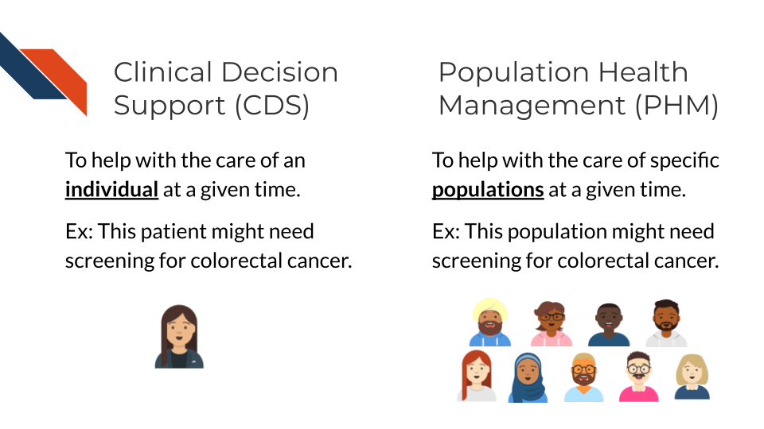

Chapter 4 Clinical Data Uses
4.2 General uses of clinical data
4.2.1 Cancer Prevention and Care
The near universal adoption of electronic health record (EHR) systems in the US has created unprecedented opportunities to improve cancer prevention and care. As described in previous chapters, EHR systems store comprehensive longitudinal records of a patient’s interactions with a healthcare system, including data about:
- demographics
- conditions
- family history
- clinical notes
- laboratory test results
- medications
- procedures
- imaging
- genetic test reports
These data can be accessed not only by health professionals, but also by patients through patient portals. EHR data can also be used to enable data-driven interventions such as provider- and patient-facing clinical decision support (CDS) and population health management (PHM).

CDS has been defined as tools that “provide clinicians, staff, patients, or other individuals with knowledge and person-specific information, intelligently filtered or presented at appropriate times, to enhance health and health care” (Osheroff et al. 2007). Examples of widely adopted CDS tools with demonstrated effectiveness for cancer prevention, diagnosis, and care include:
- provider and patient reminders for cancer screening
- decision aids and shared decision-making tools (e.g., for prostate cancer treatment, lung cancer screening)
- AI-supported diagnostic imaging
- chemotherapy decision support
- at-home symptom care
While CDS tools generally provide decision support focused on a specific patient at a time, PHM are strategies that target specific patient populations (Swarthout and Bishop 2017). PHM efforts generally consist of:
- population algorithms that are applied over EHR and other data sources to identify individuals who are eligible for a specific healthcare intervention (e.g., colorectal cancer screening, tobacco cessation, HPV vaccination)
- patient engagement strategies (e.g., patient portals, text messaging, chatbots, patient navigators) that provide education and access to those interventions
- analytic tools that assess the effectiveness of the PHM program.
Several PHM programs have demonstrated to be effective in increasing the uptake of cancer prevention. For example, the colorectal cancer screening program at Kaiser Permanente uses digital (i.e., text messaging, patient portal), mailed, and patient navigation approaches to increase colorectal cancer screening by mailing Fecal Immunohistochemical Test (FIT) kits to patients’ homes (Gupta et al. 2020). Also the Cancer Moonshot BRIDGE trial used the GARDE platform (Bradshaw et al. 2022) (ITCR-funded) to identify candidates for genetic testing of hereditary cancer syndromes based on EHR data; and for patient outreach, pre- and post-test education via automated chatbots (Kaphingst et al. 2024).

Clinical Decision Support (CDS) can help patients and clinicians make decisions about an individual’s care, while Population Health Management (PHM) can help identify individuals for interventions and engagement. The image shows a single person getting a colorectal screening reminder for CDS and a population being identified for possibly needing colorectal screening for PHM.
While some CDS and PHM approaches have been successfully adopted widely, emerging technologies such as the use of generative AI approaches to analyze diagnostic imaging, large language models (LLMs) to extract information from narrative texts (e.g., clinical notes), LLM-based chatbots to communicate with patients, and digital health tools such as home-based sensors are creating unprecedented opportunities for next generation CDS and PHM. These approaches have the potential to enable significant breakthroughs through the implementation of patient-tailored cancer prevention and care at a population scale. Nevertheless, substantial research is needed to ensure effective and fair implementation of these CDS and PHM interventions.
4.3 Types of questions that can be asked with clinical data
4.3.1 Risk Prediction
Risk prediction in clinical research involves using data to assess the likelihood of certain outcomes or events occurring in patients. This could include predicting the risk of developing a particular disease, experiencing a specific complication, or responding to a treatment.
Data used for risk prediction can come from various sources, including:
- Clinical Data: This includes patient demographics, medical history, laboratory results, and imaging studies.
- Genetic Data: Genetic information, such as DNA sequencing results, can provide valuable insights into an individual’s susceptibility to certain diseases.
- Environmental and Lifestyle Data: Factors such as diet, exercise habits, smoking status, and environmental exposures can influence disease risk and may be included in risk prediction models.
- Biomarkers: Biological markers indicative of disease or physiological processes can be used as predictors in risk models (Bodaghi, Fattahi, and Ramazani 2023).
Once relevant data is collected, statistical and machine learning techniques can be applied to develop predictive models. These models aim to identify patterns and relationships within the data that are associated with the outcome of interest. Common techniques include logistic regression, decision trees, random forests, support vector machines, and neural networks.
After the model is trained on a dataset, it can be validated using independent datasets to assess its performance and generalizability. Once validated, the model can be used to predict risk in new patients based on their individual characteristics and data.
Clinical prediction rules are a subset of risk prediction models, specific to clinical research.
Examples of risk prediction models …
Risk prediction models are important because …
Overall, risk prediction in clinical research allows healthcare professionals to identify individuals at higher risk of certain outcomes, enabling targeted interventions, personalized treatments, and more efficient resource allocation.
4.3.2 Cohort identification for research
Clinical data plays a crucial role in cohort identification for research purposes. Researchers typically use electronic health records (EHRs), medical databases, or registries to identify cohorts based on specific criteria such as age, gender, medical conditions, treatments, medications, and outcomes. Advanced data mining and natural language processing techniques can also be employed to extract relevant information from unstructured data sources like clinical notes. Once cohorts are identified, researchers can analyze the data to study disease progression, treatment effectiveness, and outcomes.
Cohort identification is important regardless of research study type, but to provide specific examples:
- Research Design: Identifying cohorts allows researchers to design studies with appropriate inclusion or exclusion criteria. By selecting specific groups of individuals with similar characteristics or exposures, researchers can investigate hypotheses effectively.
- Clinical Insights: Cohort studies enable researchers to observe the natural history of diseases, track outcomes over time, and assess the effectiveness of interventions or treatments. Understanding how different factors influence disease progression or treatment response can inform clinical decision-making and improve patient care.
- Epidemiological Studies: Cohort identification is crucial for epidemiological research to understand the incidence, prevalence, and risk factors associated with diseases. By following cohorts over time, researchers can identify trends, patterns, and associations that contribute to our understanding of disease causation and prevention.
- Precision Medicine: Identifying cohorts based on genetic profiles, biomarkers, or other specific characteristics allows researchers to tailor treatments and interventions to individual patients. This approach, known as precision medicine, aims to optimize therapeutic outcomes while minimizing adverse effects.
- Healthcare Policy and Planning: Cohort studies provide valuable data for informing healthcare policies, resource allocation, and public health strategies. By identifying high-risk populations or groups with specific healthcare needs, policymakers can develop targeted interventions to improve health outcomes and reduce disparities.
4.3.3 Case report forms (CRFs)
In clinical research, case report forms (CRFs) are essential tools for collecting standardized data from study participants. Note that case report forms are any paper or form that will be filled in at the case or participant level. By that definition, even a consent form is a case report form! And each clinical study may utilize multiple CRFs (e.g., one for consent, another for medical history, another for reporting any adverse effects). CRFs are useful for several tasks already discussed within this chapter – specifically, tracking adverse events or outcomes (like those discussed in the Risk Prediction section) or tracking demographics and medical history for identifying cohorts (as discussed in the Cohort Identification section). CRFs are also useful for topics this chapter will discuss in later sections (e.g., Retrospective analyses).
Designing CRFs that are accessible and sensitive to the different needs of participants requires careful consideration. Questions within CRFs should be formulated to gather comprehensive and accurate clinical data while ensuring participants feel safe, respected, and comfortable. This section explores the types of questions that can be asked using CRFs with a focus on accessibility, sensitivity, specificity, and comfort for people
While within a study, CRFs help to ensure standardization in data collection, there may be a lack of standardization when comparing data between studies if each study did not use the same CRFs or comparable/subsets of questions within forms. This section will provide guidelines for types of questions that may be found within CRFs and writing these questions; however, there aren’t necessarily templates that have been used widely within the field. Further, your specific study needs may also require different or additional types of questions – the guidelines within this section are not exhaustive/all-encompassing of what may be encountered within the field.
Here, we explore the different categories of questions that may be included within case report forms:
- Demographic and Socioeconomic Questions
Capturing demographic and socioeconomic data is fundamental in clinical research to understand the background of study participants. However, these questions must be asked in a manner that respects privacy, avoids assumptions, and helps identify people with different life experiences. It’s also good practice in order to respect privacy to include an option allowing the participants to leave the question unanswered or respond with “prefer not to answer”.
- Sex and Gender: When asking about gender and sex include an option of “prefer to self-describe” to capture more information.
- Ethnicity and Race: Ethnicity and race questions should be specific and use respectful language, allowing participants to self-identify rather than selecting from a predefined list.
- Socioeconomic Status: Questions about employment, income, or education should be framed to capture social determinants of health without making participants feel judged. For example, asking, “What is your current employment status?” with choices that include full-time, part-time, unemployed, student, and unable to work can help gather relevant data without stigma.
It is essential to use neutral, non-judgmental language and to explain why these questions are being asked, ensuring participants understand the relevance of their responses.
- Health and Medial History Questions
Health and medical history questions provide critical information about baseline conditions and potential risk factors of participants. These questions should be framed clearly and respectfully to avoid any discomfort.
- Medical Conditions and History: Questions about past and present health conditions should use clear, accessible language. For example, “Have you ever been diagnosed with any of the following conditions? (Please check all that apply)” followed by a comprehensive list containing all necessary options.
- Medication Use: Questions about current and past medications should include over-the-counter and alternative therapies, and space should be provided for free-text responses to capture additional details.
- Disability and Functional Status: For many populations, it is important to use person-first language, such as “Do you have any physical, sensory, or cognitive impairments that you would like us to be aware of?” and provide space for participants to describe their specific needs. However, different populations have different preferences. The “Disability Language Style Guide” from the National Center on Disability and Journalism provides some basic guidelines, thorough discussion, and community specific advice on this topic (“Disability Language Style Guide” 2021).
Avoiding medical jargon and providing definitions or examples can help ensure that participants understand the questions, and confidentiality should be emphasized to encourage honest responses.
- Experience and Quality of Life Questions
Understanding how health conditions and treatments affect participants’ daily lives and well-being is essential, particularly for those from communities who experience health disparities and may also experience unique challenges.
- Daily Living and Social Functioning: Questions like “How often do your health conditions affect your ability to perform daily tasks (e.g., cooking, cleaning, working)?” can help assess the impact on daily life, with options ranging from “never” to “always.”
- Emotional and Psychological Well-Being: Including questions such as “In the past week, how often have you felt anxious or depressed?” using a scale from “not at all” to “very often” can provide insights into mental health needs.
- Support Systems and Social Networks: Asking about social support (e.g., “Do you have someone you can rely on for emotional support?”) can help identify participants’ needs for social and emotional resources.
Using sensitive language and providing mental health support resources where needed is crucial when discussing emotional well-being to avoid triggering emotional distress.
- Sexual and Reproductive Health Questions
Questions about sexual and reproductive health must be asked with sensitivity, as they can be deeply personal, particularly for groups who may face stigma.
- Sexual Orientation and Gender Identity (SOGI): Instead of just predefined categories, open-ended questions like “How would you describe your sexual orientation?” and “What is your gender identity?” allow participants to self-identify. Offering the option to skip these questions respects participants’ privacy. Options can be provided with a space or text box for the person to fill in their own descriptor, but having the categorical data will allow for easier analysis for those that select one rather than every response being from variable open text responses.
- Reproductive Health: Questions about menstrual health, contraception, or pregnancy should be framed neutrally. For example, “Are you currently using any form of contraception? If yes, please specify.”
- Sexual Activity and History: Questions should be direct but framed sensitively, such as “Are there any sexual health concerns you would like to discuss? Your answers will help us understand how to better support your care needs.”
These questions should always be optional, with confidentiality emphasized to encourage honest, comfortable participation.
- Treatment Preferences and Decision-Making Questions
Understanding participants’ preferences for treatment and decision-making is vital for providing patient-centered care, especially for certain groups of people.
- Decision-Making Preferences: Questions like “How involved would you like to be in decisions about your healthcare?” offer a range of choices from “I prefer to make decisions myself” to “I prefer my healthcare provider to make decisions,” allowing participants to express their autonomy.
- Cultural and Religious Considerations: Asking, “Are there any cultural, religious, or personal beliefs that we should consider when discussing treatment options with you?” ensures that care is respectful and culturally appropriate.
- Treatment Burden: Questions such as “What level of inconvenience or side effects would be acceptable to you when considering a treatment?” help to gauge participants’ preferences and comfort levels.
These questions should be framed to respect participants’ autonomy and encourage honest responses without fear of judgment.
- Accessibility and Accommodation Needs Questions
To ensure that all participants can fully engage with the study, it is essential to ask about accessibility and accommodation needs.
- Language and Communication Needs: “What is your preferred language for communication? Do you need an interpreter or translated materials?” These questions help ensure that participants can understand the materials.
- Physical Accessibility: Asking, “Do you require any specific accommodations to participate in this study (e.g., wheelchair access, hearing aids, visual aids)?” ensures physical accessibility.
- Format Preferences: “Would you prefer to complete this form online, on paper, or verbally with assistance?” helps accommodate different needs and preferences. Providing multiple options and allowing participants to request changes at any time is crucial to accommodate evolving needs.
Providing multiple options and allowing participants to request changes at any time is crucial to accommodate evolving needs.
- Cultural Sensitivity and Identity Questions
CRFs should respect different cultural backgrounds, values, and identities without perpetuating biases or assumptions.
- Cultural Identity and Practices: An open-ended question such as “Are there any cultural practices or beliefs that are important for us to be aware of in your care?” allows participants to share relevant information.
- Dietary Restrictions and Preferences: Asking, “Do you have any dietary restrictions or preferences that are culturally or religiously motivated?” ensures that these are respected.
- Community and Belonging: “Is there anything about your community or background that you would like us to know to provide better care?” encourages participants to share relevant aspects of their identity.
These questions should be open-ended, allowing participants to skip questions they find irrelevant or uncomfortable.
- Ensuring Comfort, Trust, and Privacy Questions
Fostering a sense of safety and trust is especially important for individuals who may have experienced discrimination in healthcare settings.
- Comfort and Confidentiality: Asking, “Do you feel comfortable with the way your information is being collected and stored? Are there any specific concerns you would like to address?” helps build trust.
- Feedback and Preferences: “Is there anything about this form or the study process that you find confusing, uncomfortable, or concerning?” invites participants to share their feedback.
- Consent and Voluntary Participation: Questions like, “Would you like to be contacted about the results of this study or for future research opportunities? Participation is entirely voluntary.” reinforce autonomy and respect.
Reminding participants of the confidentiality and voluntary nature of their involvement can help foster a trusting environment.
The guidelines above sometimes suggest use of open-ended questions where participants would provide free-text responses rather than selecting pre-defined categories. This will require researchers to process those free-text responses and may decrease the overall standardization.
Designing specific and sensitive CRFs for clinical studies requires a thoughtful approach that respects the different backgrounds, privacy, and comfort of all participants, especially those from communities that experience health disparities. By using accessible language, offering multiple options, respecting autonomy, and providing a safe space for participants to express themselves, researchers can gather meaningful and accurate data while ensuring participants feel valued and respected. These considerations are vital to fostering clinical research that captures enough information about a wide variety of individuals. Case report forms (CRFs) are often tailored to specific studies and may vary widely in structure and content, lacking standardization across different projects. Despite this, certain themes are commonly expected in CRFs, including sections on participant demographics, medical history, treatment outcomes, and adverse events, ensuring essential data collection across a variety of study designs. By thoughtfully addressing both unique study requirements and universally relevant data points, researchers can optimize CRFs for consistency across clinical studies.
4.3.4 Clinical studies and trials
Clinical data generated from clinical trials and observational studies form the backbone of evidence-based medicine. The ability to analyze and interpret this data enables researchers and clinicians to answer a variety of important questions that directly impact patient care, treatment decisions, and healthcare policies.
Clinical trials are tightly regulated studies, controlling patient recruitment and monitoring administration and impact of treatments or interventions (“What Are Clinical Trials and Studies?” 2023). The goals of clinical trials include assessing the safety and efficacy of new treatments or interventions, comparing different/existing treatment options, determining the optimal dosage and administration of interventions, and identifying potential side effects or adverse events.
Definition 4.1 The NIH’s definition of a clinical trial is “a research study in which one or more human subjects are prospectively assigned to one or more interventions (which may include placebo or other control) to evaluate the effects of those interventions on health-related biomedical or behavioral outcomes.”
The NIH provides 4 questions and additional clarifications to consider when identifying if a study is a clinical trial or just a clinical study (“NIH’s Definition of a Clinical Trial,” n.d.).
Definition 4.2 Prospectively assigned: Refers to a pre-defined process (e.g., randomization) specified in an approved protocol that stipulates the assignment of research subjects (individually or in clusters) to one or more arms (e.g., intervention, placebo, or other control) of a clinical trial (“NIH Clinical Trials,” n.d.).
Here, we explore the different categories of questions that can be addressed using clinical trials data, ranging from the evaluation of treatment efficacy and safety to the exploration of predictive factors for disease prognosis and the personalization of medical care.
- Efficacy and Effectiveness Questions
One of the primary objectives of clinical trials is to determine the efficacy of new treatments or interventions. Clinical data is used to answer fundamental questions such as “Is the new treatment effective?” and “How does its effectiveness compare to existing treatments?”
Researchers design studies to measure the magnitude of treatment effects, comparing outcomes between treatment and control groups (e.g., a new drug versus a placebo or standard care).
Beyond controlled settings, data from real-world evidence (RWE) studies can further address questions about the effectiveness of treatments when applied in routine clinical practice. For example, “Is Drug A more effective than Drug B in managing hypertension in a real-world patient population?” Such questions help to assess how treatments perform outside the controlled environment of clinical trials where patient adherence comorbidities, and polypharmacy may influence outcomes. While clinical trials are an important source of real-world data (RWD), they are typically conducted under tightly controlled conditions, which may not fully reflect the complexities of real-world studies. This makes RWE particularly valuable for understanding how treatments work when patients have varying levels of adherence or multiple chronic conditions that are often excluded from clinical trails.
Definition 4.3 Comorbidities: refer to the presence of one or more additional medical conditions or diseases that coexist with a primary condition in a patient. These conditions can occur independently or be related to the primary disease.
- Safety and Tolerability Questions
Safety is a critical aspect of any clinical study, and clinical data is essential in identifying and characterizing the safety profile of new treatments. Questions like “What are the common adverse effects of the new treatment?” or “What is the incidence of serious adverse events (SAEs) in patients receiving Drug A?” are addressed by carefully monitoring and recording adverse events throughout the study. Comparative safety questions also arise, such as “Does Drug A have fewer adverse effects compared to Drug B?” These questions are crucial in weighing the benefits of a treatment against its risk and in identifying specific populations that may be at higher risk of adverse reactions.
Definition 4.4 Serious Adverse Events (SAEs): Any medical occurrence during a clinical trial or medical treatment that results in significant negative outcomes, such as death, life-threatening situations, hospitalization (or its prolongation), persistent or significant disability, or congenital anomalies. SAEs also include any event that requires intervention to prevent one of these outcomes.
Definition 4.5 Incidence: Refers to the rate or number of new cases of SAEs that occur within a specific population during a defined time period, typically during a clinical trial or study. Is it usually expressed as a proportion, such as the number of SAEs per 100 or 1,000 participants, and helps measure how frequently these serious events happen among those exposed to a particular treatment or intervention.
- Comparative Effectiveness and Cost-Effectiveness Questions
Beyond safety and efficacy, clinical data can be used to evaluate the comparative effectiveness of different treatments and their cost-effectiveness. These questions often guide healthcare policy and clinical guidelines: “Is Drug A more cost-effective than standard care for managing chronic heart failure?” and “What is the cost per quality-adjusted life year (QALY) gained with the new intervention?” Such analyses provide valuable information for stakeholders, including healthcare providers, payers, and policymakers, to make informed decisions on resource allocation.
Definition 4.6 Cost per quality-adjusted life year (QALY) is a metric used in health economics to assess the value of a medical intervention by measuring the cost of gaining one year of life adjusted for its quality. A QALY incorporates both the quantity and quality of life lived, where one QALY is equivalent to one year of life in perfect health. If a treatment improves both the length and quality of life, it earns more QALYs. The cost per QALY is calculated by dividing the cost of the treatment by the number of QALYs gained, helping to determine the cost-effectiveness of healthcare interventions. Lower cost per QALY indicates better value for money in terms of health benefits achieved (2015).
- Mechanistic and Biomarker Questions
Clinical studies often explore not just whether a treatment works, but also how it works. Mechanistic questions delve into the underlying biological pathways affected by a treatment. For instance, “Does Drug A work by inhibiting a specific enzyme involved in the disease process?” Biomarker data can play a key role in such analyses, helping to identify molecular markers that predict response to treatment. Questions like “Are there biomarkers that can predict which patients are more likely to benefit from Drug A?” help in developing targeted therapies and personalized treatment approaches.
- Predictive and Prognostic Questions
Clinical trials and studies frequently aim to identify factors that predict disease outcomes or treatment responses. For example, “What baseline characteristics predict a better response to Drug A?” or “What are the predictors of mortality in patients with severe heart failure?” Such prognostic and predictive questions are crucial for identifying high-risk patients, guiding treatment decisions, and developing clinical guidelines. Identifying patient subgroups that benefit more or less from a treatment also facilitates personalized medicine approaches, ensuring that the right treatment is delivered to the right patient at the right time.
With the advent of personalized medicine, clinical data is increasingly being used to answer questions tailored to individual patient profiles. For instance, “What patient characteristics modify the effect of the treatment?” or “Can we predict which patients are most likely to benefit from Drug A using machine learning models?” These questions are at the forefront of precision medicine, where the goal is to customize healthcare to each patient based on their unique genetic, biomarker, and clinical characteristics.
- Quality of Life and Patient-Reported Outcome Questions
In modern clinical research, the impact of treatments on patients’ quality of life and their subjective experiences has gained prominence. Questions such as “How does Drug A affect patients’ quality of life compared to standard care?” or “What are the patient-reported outcomes associated with the new intervention?” are increasingly addressed in clinical trials. Data from quality of life assessments which are standardized and validated questionnaires (for example, the Health Assessment Questionnaire or HAQ), patient-reported outcome measures (PROMs, tools or questionnaires used to assess a patient’s health status or health-related quality of life directly from the patient’s perspective), and other patient-centric endpoints (Smoking History, Surgical History, etc.) provide valuable insights into how treatments affect patients beyond traditional clinical endpoints.
- Longitudinal and Follow-Up Questions
Long-term follow-up studies are essential for understanding the durability of treatment effects and any delayed adverse effects. Questions like “What are the long-term outcomes associated with Drug A?” and “Is there a sustained benefit of Drug A in reducing symptoms after five years?” are vital for assessing the overall value of treatments. Such longitudinal analyses help in determining the optimal duration of therapy, the need for maintenance treatments, and the overall benefit-risk profile of an intervention.
- Safety in Special Populations Questions
Clinical data can also be used to evaluate the safety and efficacy of treatments in special populations, such as children, pregnant women, or elderly patients. Questions such as “Is Drug A safe for use in pregnant women?” and “What is the risk of adverse events when Drug A is administered to patients with multiple comorbidities?” are essential for developing age- and condition-specific clinical guidelines. These questions help ensure that treatments are tailored to the needs of different patient populations, minimizing harm and maximizing benefits.
- Adherence and Compliance Questions
Patient adherence to prescribed treatment regimens can significantly impact the outcomes of clinical studies. Questions like “What factors influence patient adherence to the new treatment?” and “How does adherence affect treatment efficacy?” are addressed through analyzing adherence data through monitors if a regulated study, or with interim/baseline analysis if non-regulated. Understanding these factors can lead to interventions that improve adherence and, consequently, the effectiveness of the treatment.
- Real-World Evidence and Generalizability Questions
Real-world evidence (RWE) studies help bridge the gap between clinical trial results and clinical practice. Questions such as “How generalizable are the results of this clinical trial to the broader population?” or “What is the impact of real-world use patterns on treatment outcomes?” are essential for understanding how well clinical trial findings apply to everyday clinical settings. These questions help determine if the benefits observed in clinical trials can be replicated in diverse patient populations under routine care conditions.
- Prevention and Risk Reduction Questions
Clinical data is also crucial in answering questions related to prevention and risk reduction strategies. For example, “Can the new treatment reduce the risk of developing diabetes in high-risk individuals?” or “What factors are associated with a reduced risk of cardiovascular disease in a large cohort study?” These questions are fundamental in preventive medicine, guiding public health interventions and informing clinical practice.
Clinical Data provides a wealth of information that can be leveraged to answer a broad array of questions in clinical trials and studies. From understanding treatment efficacy and safety to exploring long-term outcomes, quality of life impacts, and the potential for personalized medicine, clinical data is foundational to advancing medical knowledge and improving patient care. Case report forms (CRFs) are instrumental in identifying patient cohorts or subgroups, documenting baseline characteristics, and capturing information on comorbidities, while also monitoring adherence data, which are essential for ensuring accurate and meaningful analysis. The type of questions that can be asked and answered are continually evolving as new data sources, analytical methods, and research paradigms emerge, further enriching the field of clinical research.
4.3.5 Retrospective analysis
Retrospective analysis involves the examination of pre-existing clinical data to answer specific research questions, explore hypotheses, and identify patterns or trends. This method leverages historical data collected from medical records, administrative databases, registries, electronic health records (EHRs), or other sources of clinical information. The types of questions that can be asked through retrospective analysis span a wide range of clinical and epidemiological domains. The questions typically focus on understanding patient characteristics, disease epidemiology, treatment outcomes, risk factors, healthcare utilization, and more.
Here, we explore the different categories of questions that can be addressed using retrospective data analysis:
- Descriptive Questions
Descriptive questions aim to summarize and describe the characteristics of a patient population, disease, or healthcare process. They provide a foundational understanding of a dataset and are often the starting point for more complex analyses.
- Patient Demographics and Characteristics: What are the demographic profiles (age, gender, ethnicity, socioeconomic status) of patients diagnosed with a specific condition? What are the common comorbidities and risk factors in this population?
- Disease Prevalence and Incidence: What is the prevalence or incidence of a specific disease or condition in a particular population or geographic area over a defined period?
- Clinical Presentation: What are the most common presenting symptoms, clinical signs, or laboratory findings associated with a specific disease or condition?
These questions help in understanding the baseline characteristics and epidemiology of diseases, which is crucial for planning further studies or developing public health interventions.
- Treatment and Intervention Questions
Retrospective data can be used to examine the real-world effectiveness, safety, and patterns of treatment and interventions. These questions are critical for understanding how treatments are applied in clinical practice and their outcomes:
- Treatment Effectiveness: What is the effectiveness of a specific treatment or intervention in reducing symptoms, improving quality of life, or achieving clinical outcomes in a real-world setting?
- Adherence and Persistence: What are the rates of adherence and persistence with a prescribed treatment regimen over time? What factors are associated with higher or lower adherence rates?
- Comparative Effectiveness: How does the effectiveness of one treatment compare to another in a similar population? What are the relative benefits and risks associated with different treatment options?
By examining historical data, researchers can gain insights into how different treatments perform outside the controlled environment of clinical trials, thereby informing clinical decision-making and guidelines.
- Outcome and Prognostic Questions
Understanding patient outcomes and prognostic factors is central to retrospective analyses. These questions focus on the end results of healthcare practices and patient management, including survival, complications, and quality of life:
- Survival and Mortality: What are the survival rates and mortality rates associated with a particular disease, condition, or treatment? What factors are associated with increased or decreased survival rates?
- Complication Rates: What are the rates and types of complications associated with specific diseases, surgeries, or treatments? Are there identifiable risk factors for these complications?
- Prognostic Factors: What are the key prognostic factors (e.g., age, stage of disease, comorbidities) that influence the outcomes of patients with a particular condition?
These questions help identify factors that influence patient outcomes, guiding clinicians in predicting disease progression and tailoring individual treatment plans.
- Risk Factor and Predictive Modeling Questions
Retrospective analyses are often used to identify potential risk factors for diseases and develop predictive models. These questions aim to uncover associations between variables and outcomes to help predict future events:
- Risk Factors for Disease: What are the risk factors associated with developing a particular disease or condition? Are there demographic, genetic, behavioral, or environmental factors that significantly increase the risk?
- Prediction Models: Can we develop a predictive model to estimate the likelihood of disease progression, relapse, or adverse outcomes based on historical patient data?
- Multivariable Analysis: How do multiple factors interact to influence the risk of an outcome? Are there synergistic or antagonistic effects between different risk factors?
These questions are critical for developing tools that help clinicians assess risk and make more informed decisions in preventive care and early intervention.
- Healthcare Utilization and Cost Questions
Understanding how healthcare resources are utilized and the associated costs is important for optimizing healthcare delivery. Retrospective data can provide valuable insights into patterns of care and resource allocation for questions such as:
- Healthcare Resource Utilization: What are the patterns of healthcare utilization (e.g., hospitalizations, emergency room visits, outpatient visits) for patients with a specific condition? How does utilization vary by patient demographics, disease severity, or geographic location?
- Cost of Care: What are the direct and indirect costs associated with managing a specific disease or condition? How do different treatment options impact overall healthcare costs?
- Cost-Effectiveness: How does the cost-effectiveness of one treatment or intervention compare to another? What are the economic impacts of different clinical management strategies?
These questions can inform healthcare policy, budget planning, and the development of strategies to improve cost-effectiveness and access to care.
- Quality of Care and Patient Safety Questions
Retrospective analysis can be used to evaluate the quality and safety of care provided to patients, identifying areas for improvement and potential patient safety concerns, helping to answer questions such as:
- Quality Indicators: Quality indicators are standardized measures of health care quality and may focus on more specialized groups of care like preventative, inpatient or emergency care, pediatric or maternal health, etc. What are the levels of observed mortality or morbidity for a certain population in a specific setting? How utilized are certain procedures? (“AHRQ Quality Indicator Measures,” n.d.)
- Adverse Events and Safety: What is the incidence of adverse events, medication errors, or healthcare-associated infections in a particular patient population? What factors are associated with higher or lower rates of adverse events?
- Patient Satisfaction and Experience: What are the reported levels of patient satisfaction with healthcare services? How does satisfaction vary by demographic or clinical characteristics?
These questions help in assessing healthcare quality, identifying gaps in care, and developing interventions to enhance patient safety and satisfaction.
- Temporal and Trend Analysis Questions
Retrospective studies often involve analyzing temporal patterns to understand how diseases, treatments, or outcomes change over time. These questions help in recognizing trends and patterns that can inform future research and policy decisions:
- Temporal Trends in Disease Incidence and Prevalence: How have the incidence and prevalence of a specific disease changed over the past decade? Are there seasonal or cyclical patterns in disease occurrence?
- Trends in Treatment Practices: How have treatment practices and prescribing patterns evolved over time? Are there emerging trends in the use of certain medications or interventions?
- Trends in Outcomes and Survival: How have patient outcomes, such as survival rates or complication rates, changed over time with advances in treatment and healthcare delivery?
These questions are essential for monitoring public health trends, evaluating the impact of interventions, and planning future healthcare strategies.
- Subgroup and Stratified Analysis Questions
Subgroup analyses can help uncover differences in disease characteristics, treatment responses, and outcomes among different patient groups. This type of analysis is particularly valuable for personalized medicine and addressing questions related to health disparities:
- Differences by Demographic Group: How do treatment outcomes, risk factors, or disease characteristics differ between various demographic groups (e.g., age, gender, race/ethnicity)?
- Subgroup-Specific Effectiveness: Does a particular treatment work better in one subgroup of patients compared to another? What factors might explain these differences?
- Health Disparities: Are there disparities in healthcare access, treatment outcomes, or disease burden across different socioeconomic or minority groups?
Questions focusing on subgroups are crucial for understanding variations in care and outcomes, identifying at-risk populations, and developing targeted interventions.
Retrospective analysis of clinical data allows researchers to ask a wide range of questions that provide valuable insights into patient characteristics, disease epidemiology, treatment effectiveness, outcomes, risk factors, healthcare utilization, and more. By carefully formulating questions and analyzing historical data, researchers can uncover patterns, identify trends, and generate evidence that informs clinical practice, healthcare policy, and future research directions. This chapter outlines the various categories of questions that can be addressed through retrospective analysis, highlighting the potential of this approach to advance knowledge and improve patient care in diverse clinical settings.
4.4 Research Design Considerations
Researchers need to intentionally use methods earlier in the research process than data analysis to manage data biases associated with clinical data, especially EHR.
One of the most important challenges in using EHR data in cancer research is that, as in many other fields, healthcare data are plagued with several types of biases that result from disparities in the delivery of healthcare. Overall, cancer research has historically relied on data from high resource academic medical centers, which disproportionately provide care to patients who are White, have high socioeconomic status, and live in urban areas. As a result, medical knowledge produced from these data have disproportionately benefited those patients. Different sources of bias are prevalent in EHR data. For example,
- Information representativeness bias occurs when certain groups are disproportionately less present in the EHR because they have no contact with the healthcare system.
- Information presence bias, on the other hand, occurs when certain groups may be represented in the EHR, but have disproportionately less comprehensive healthcare data due to issues such as overall lower access to and use of healthcare service, lack of a primary care provider, lack of access to specialty care, and lack of access to digital resources (e.g., patient portals, home sensors, telehealth) that can be used to provide healthcare data.
- Treatment biases happen when certain groups receive disproportionate access to more advanced treatments, which is often determined by social drivers such as insurance, distance, health literacy, and socioeconomic status.
- Algorithm bias further amplifies these previous sources of bias by leveraging biased EHR data to make predictions about diagnosis, treatment and prognosis that are used by clinicians to make potentially biased healthcare decisions, which are then documented in the EHR.
Recent advances in sophisticated and costly technology such as genetic testing, artificial intelligence, and digital health, which are disproportionately available in high resource healthcare systems further compound the problem. Therefore, cancer researchers increasingly need to use intentional methods to prevent, identify, and correct for biases in EHR data. For example, the National Institutes of Health Pragmatic Trials Collaboratory has made several recommendations to address EHR data biases in research (Andrew D. Boyd et al. 2023a; Andrew D. Boyd et al. 2023b):
- Include data from low resource healthcare settings such as community health centers that provide care for patients who have low socioeconomic status and live in rural areas.
- Engage with communities during study design and study conduct to ensure proper data collection, analysis, and representation.
- Use data collection methods for self-reported data that rely on more accessible technology such as text messaging, using accessible and culturally adapted communication.
- Include subgroup analysis by different demographic groups according to variables such as socioeconomic status, race, ethnicity, sex, geographical location, and social determinants of health.
With such approaches, cancer researchers while aiming to avoid exacerbating health disparities, in addition help to reduce disparities.